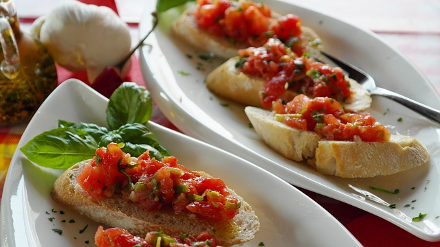
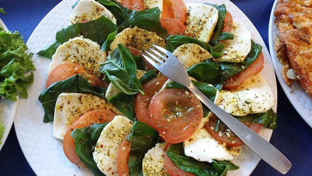
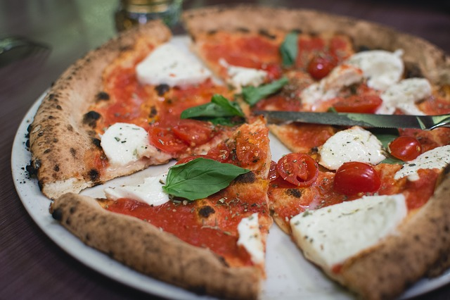
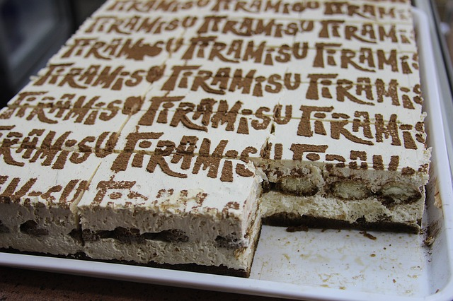

Recepti
Brusketi

Priprema
- Baget iseći na kriške na. 1 cm debljine. Napraviti smesu od 100 ml masilnovog ulja i 1 čena belog luka i njome premazati svaku krišku, pa ih poređati u podmazan pleh i peći na 200° 10 tak minuta.
- Hleb treba da je hrskav i dobije zlatkastu boju.
- Namaz: Paradajz i crni luk iseckati na što je moguće manje kockice i pomešati. Tome dodati isceđena 3 čena belog luka, preostalo ulje, sitno seckan bosiljak, so, biber i prstohvat šećera. To fino izmešati i time filovati ispečene kriške bageta
- Eventualno se od gore može narendati Mozzarella, i u tom slučaju vratiti bruskete opet na kratko u rernu, koliko da se Mozzarella istopi. Prijatno!

Priprema
- Mocarelu izvadite iz surutke i izrežite na tanke režnjeve.
- Hladan, tvrđi paradajiz isecite na kolutove.
- Složite na tanjir naizmenično – red paradajiza, red mocarele.
- Sve prelijte maslinovim uljem, posolite i pospite listićima bosiljka.

Prirpema
- U kipuću, predhodno posoljenu vodu, staviti špagete da se kuvaju
- U isto vreme, na dve kašike maslinovog ulja propržiti sitno seckanu slaninu, svinjsku pečenicu ili dimljeni svinjski vrat (u mom slučaju svinjska pečenica, jer nisam našla lepu slaninu) dok ne porumeni i ne postane blago hrskavo, kako bi se reklo-crispy. Potrebno je oko 5 minuta. Pred sam kraj, dodati propasiran čen belog luka i promešati.
- U posebnoj posudi dobro izmešati žumanca sa kiselom pavlakom, dodati peršun, mleveni biber i malo soli. Ovu mesu uliti u tiganj sa dinstanom svinjskom pečenicom i mešati dok ne proključa - oko 2 minuta, i odmah skloniti sa vatre.
- Za to vreme bi trebalo da su i špagete gotove. Procediti ih i sipati u veću, dublju činiju. Preliti ih prelivom (ostavite 2-3 kašike za kraj, kako bi prelili time celu porciju) i dobro izmešati, kako bi se špagete i preliv dobro sjedinili.
- Gotove špagete prelijte ostatkom preliva i prstohvatom suvog usitnjenog peršuna

Priprema
- U mlako mleko dodati izmrvljen kvasac i šećer. Ostaviti da nadođe oko 5 minuta. U posudu za mešenje sipati vodu, nadošao kvasac i brašnom (u koje smo dodali so) i zamesiti glatko testo. U testo umešati ulje i ostaviti da se udvostruči.
- Pripremiti preliv. Pomešati sok od paradajza, sa pelatom, sitno seckanim peršunom i origanom.
- Nadošlo testo premesiti, ostaviti ga par minuta da se odmori, pa rastanjiti u formi kruga. Staviti ga u nauljenu tepsiju, izbockati viljuškom, pa preliti smesom od paradajza i bosiljka
- Posuti rendanim sirom. Peći u zagrejanoj rerni na 200 C dok se sir ne otopi. Paradajz oljuštiti i iseći na kriške
- Kad se sir otopi, izvaditi pizzu iz rerne, poređati paradajz i listiće bosiljka. Vratiti u rernu da se ispeče do kraja (još nekih 5-7 minuta)
-
Gotovu pizzu izvaditi iz rerne.Ostaviti je da se malo ohladi. Iseći na parčad željene veličine i poslužiti! Prijatno

Priprema
- Penasto mikserom umutiti žumanca sa šećerom, a zatim dodati mascarpone sir i sve dobro izmutiti. U drugu posudu umutiti haltu ili neki drugu slatku pavlaku.
- Sjediniti ova dva fila. Kutlačom polako izmešati.Skuvati ness kafu, dodati u nju malo ruma.
- Piškote umakati u kafu i ređati.Preko piškota staviti fil, a zatim kroz cediljku posuti kakao preko fila.
Ponoviti postupak
- Kolač ostaviti u fružideru da se ohladi. Prijatno!

Priprema
- Ugrejati pavlaku i mleko sa začinima i šećerom, preliti preko bele čokolade i izmešati. Ostaviti na hladnom preko noći. Ugrejati pripremljen želatin da se otopi i smesu za panna cottu malo po malo uliti u želatinu, procediti, ohladiti na sobnu temperaturu. Puniti u kalupe i ostaviti da se stegne.
- Šljive iseći na četvrtine i staviti ih u pleh sa papirom za pečenje, posipati po njima šećer, rum i začine. Staviti u ugrejanu rernu na 200 C sve dok šljive lagano ne omekšaju i puste svoj sok, a da ostanu čvrste i ne raspadaju se. U međuvremenu umešati gustin da zgusne sok od šljiva.
- Poslužiti panna cottu sa izlomljenim karamelizovanim lisnatim testom, pečenim šljivama u njihovom umaku i džemom, te sa lešnikom i šećerom u prahu.
Na vrh
Pocetna stranica